超級賽亞人到極意之境——七龍珠宇宙所有重要戰鬥變身型態完整介紹
⚡ 七龍珠的「戰鬥力」概念和各種變身型態是漫畫史上最具影響力的設計之一。「超級賽亞人」的金色頭髮在全球成為大眾文化符號，每一次新型態登場都掀起粉絲狂熱。
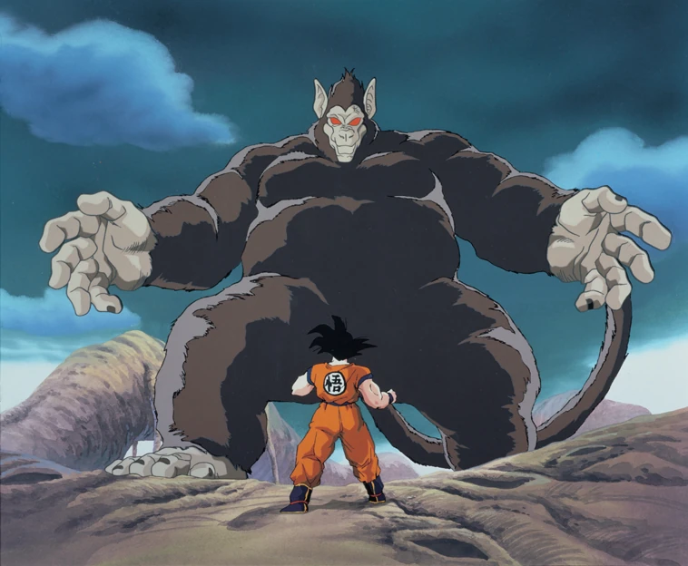
賽亞人在望月照射時，因尾巴上的特殊細胞引發大猿化，體積暴增10倍，戰鬥力×10。悟空幼年時多次使用，後來失去尾巴後無法再變身。
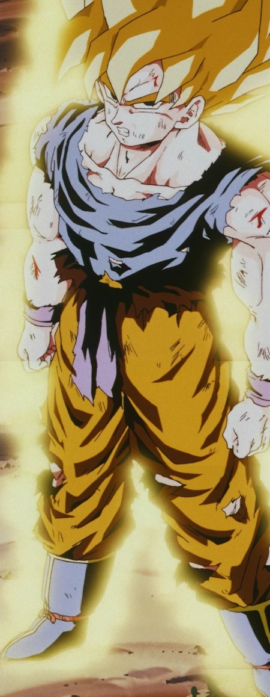
傳說中的「超級賽亞人」——金色頭髮豎起、藍色眼睛、黃色氣場。悟空在那美克星因克林被弗利沙殺死而憤怒引爆。戰鬥力提升50倍，是七龍珠最具代表性的變身。
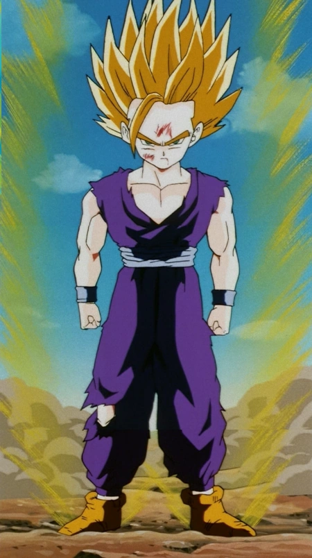
頭髮更加豎直，周圍出現放電般的電弧，氣場更强烈。最早由孫悟飯在對抗賽魯時達成，因憤怒超越了超賽的極限。戰鬥力是超賽1的2倍，是Cell篇的決定性變身。
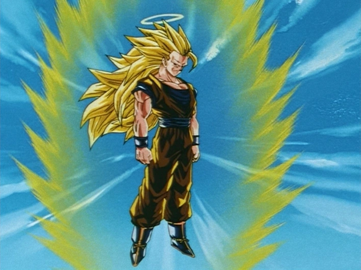
頭髮極度延長至腰部以下，眉毛消失，氣場如風暴般龐大。悟空在天界修練中開發，消耗極大，難以長時間維持。視覺衝擊力極強，是布歐篇前期的最強展示。
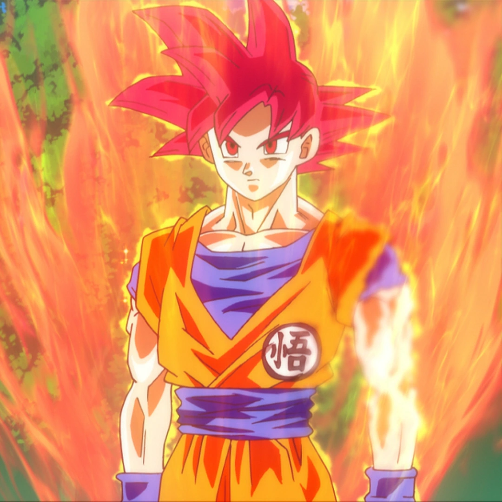
由六名純善賽亞人（含未出生者）的氣灌注一人而成的「神之超賽亞人」。紅色頭髮、紅色眼瞳、纖細的神之氣場。比魯斯的破壞神等級，需要神之氣才能達成，開啟了Super時代的全新戰力層次。
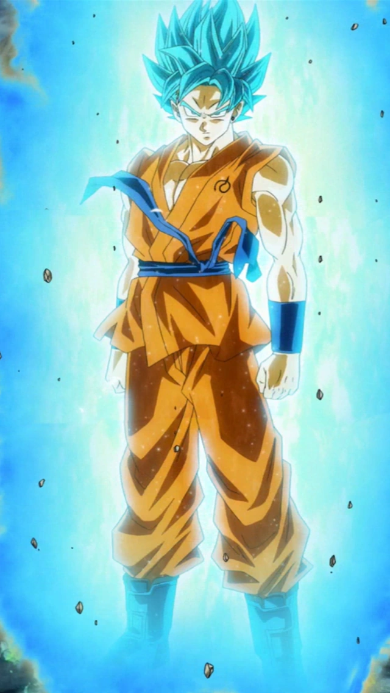
俗稱「超藍（Super Saiyan Blue）」。在掌握超賽神之力後再進入超賽狀態，結合神之氣與超賽氣，藍色頭髮、藍眼、藍色氣場。Super初期悟空和貝吉塔的主要強化型態。
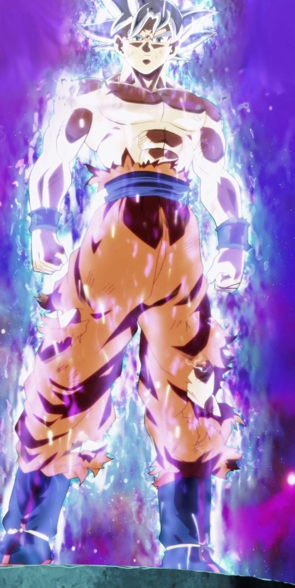
俗稱「兆」。身體自動閃避和攻擊，無需大腦思考，是天使等級的戰鬥技術。初現為身體本能閃躲，完全型態時頭髮變為銀白色，眼睛銀灰。比魯斯都難以掌握的境界。
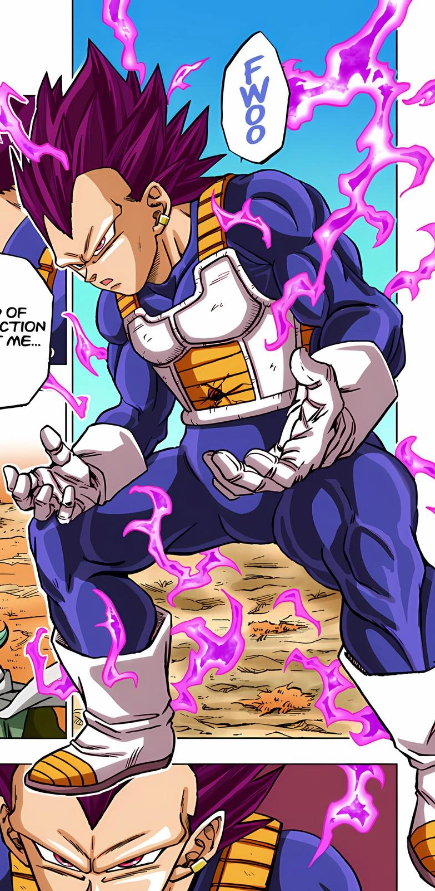
貝吉塔在跟隨比魯斯學習後達成的獨特變身——與悟空的「身體本能」相反，是基於「破壞之心」的戰士之路。頭髮變為紫色，受傷反而使力量增幅，體現貝吉塔獨特的戰鬥哲學。
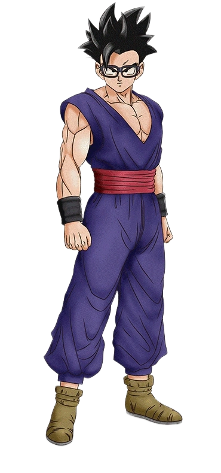
在老界王神解封悟飯全部潛力後達成的形態，白色頭髮、紫色眼睛。不走超賽路線而是純粹釋放自身潛力，在宇宙生存大賽中展現驚人戰鬥力，能與Cell-Max匹敵的強力版本。
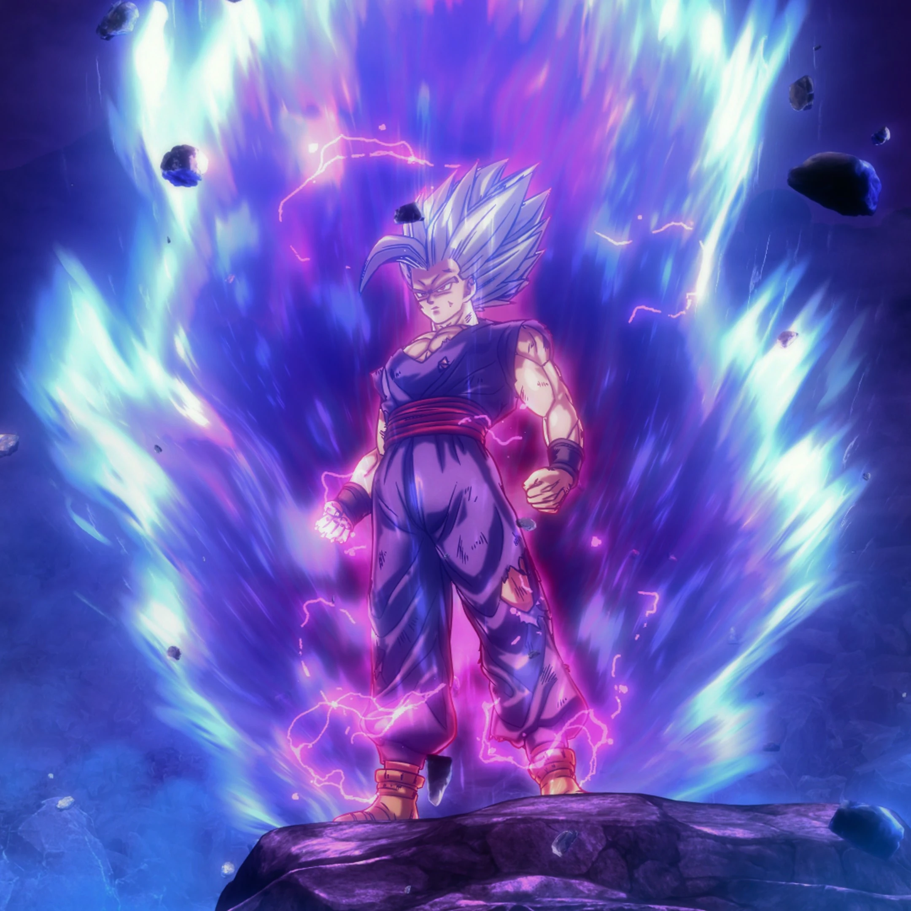
Super Hero劇場版中，因比克生命垂危激發的爆發型態。頭髮呈黑白相間，眼睛深紅。在潛力解放型態基礎上再度突破，消滅了賽魯超體（Cell-Max），展現比克比克橘色更強的絕對戰力。
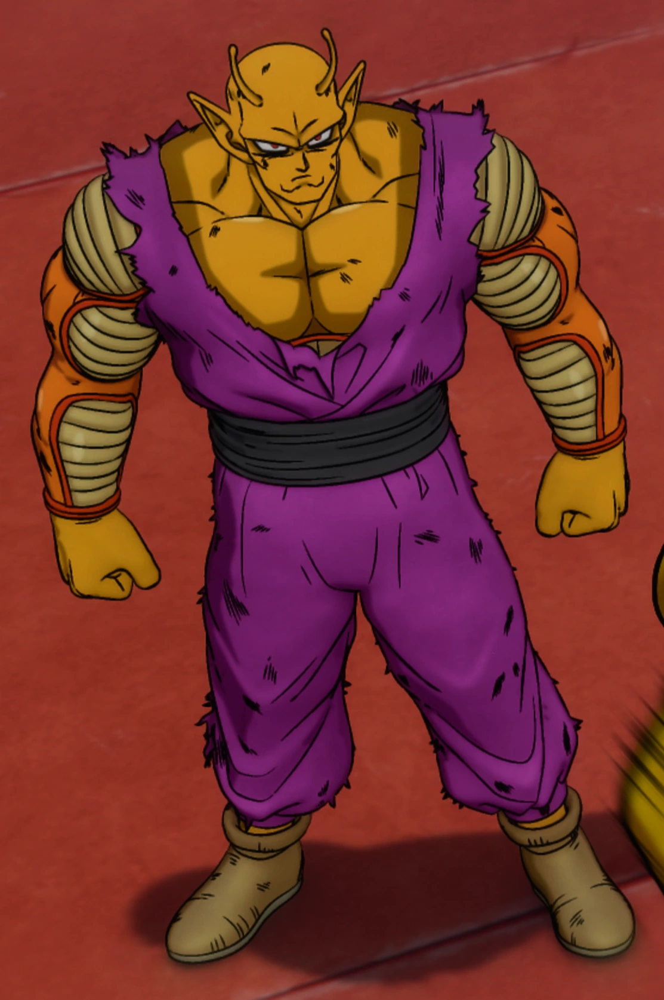
比克在全王的神龍那美克蒂爾（Shenron）許願後獲得的潛力解放型態，皮膚轉為橘色並體型增大。這是比克在七龍珠史上第一次獲得與主角同等級的重大強化，終於能以獨立戰力登上舞台。
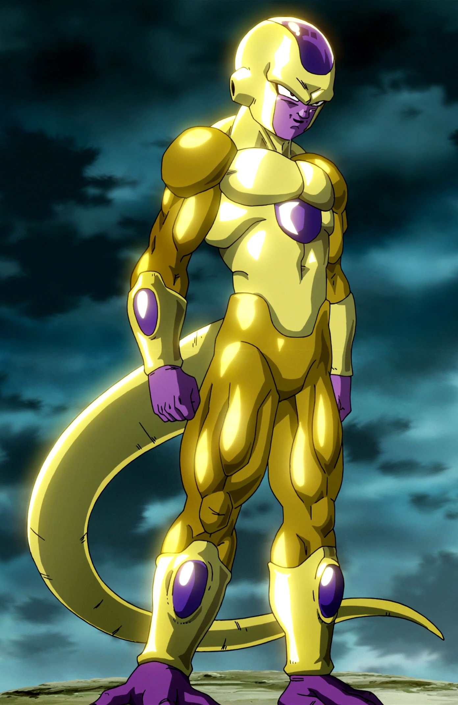
弗利沙為對抗神之戰力而修練4個月後達成的究極型態，金色身體，戰鬥力媲美超藍。但因修練時間過短，無法長時間維持。後來在Super漫畫中達成「黑弗利沙（Black Frieza）」超越超藍進化。
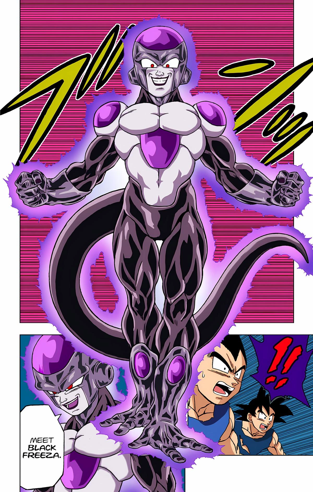
弗利沙在時間靜止空間中修練10年後達成的最終形態。全身漆黑，單拳擊倒同時使用極意之境的悟空與使用自我極致的貝吉塔，展現遠超神域的恐怖戰力。
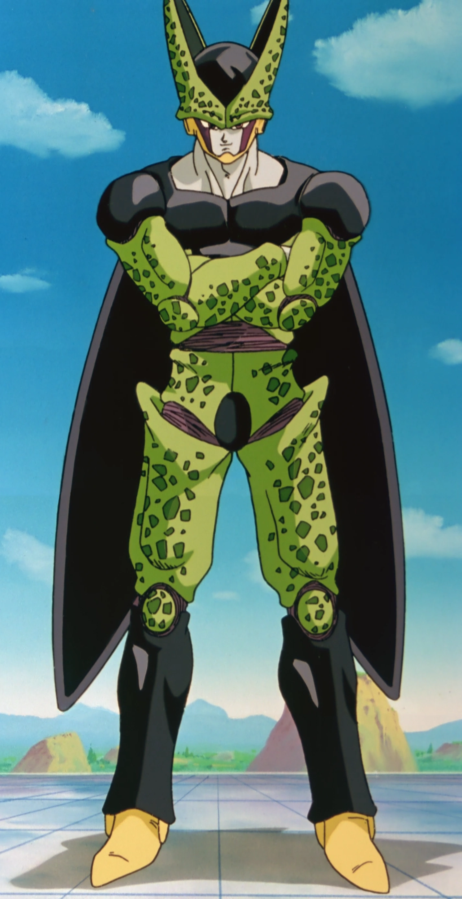
吸收18號後達成的完全型態，融合了賽亞人、那美克星人、弗利沙族等多種基因的終極進化。自信滿溢，主辦Cell Games挑戰世界最強。在超賽2悟飯的龜波氣功下最終潰滅。
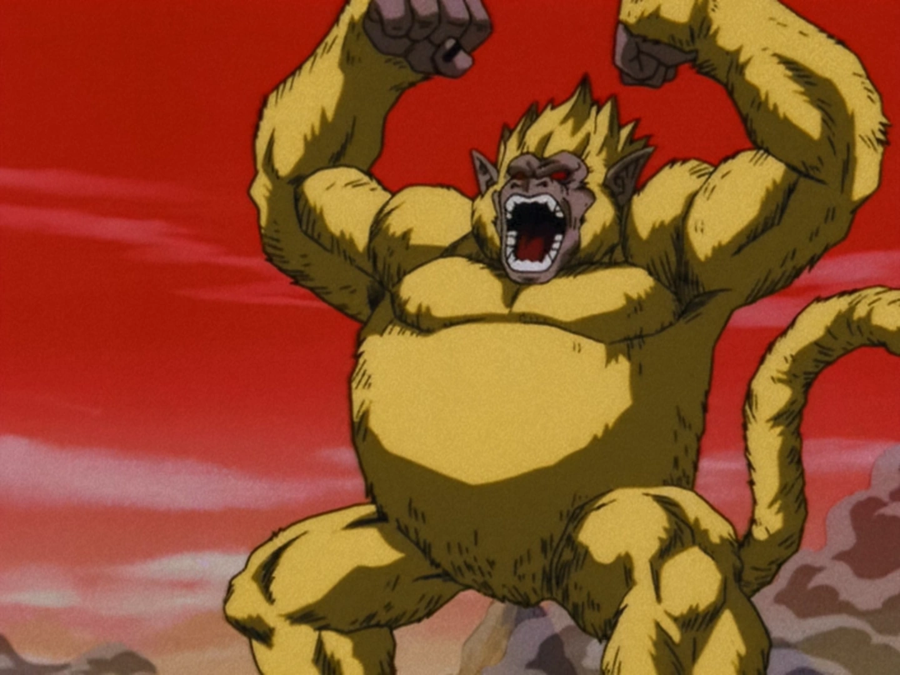
GT中悟空恢復尾巴後，在宇宙中看到全月引發大猿化，但因掌握超賽4能量，大猿金色化。是超賽4的前形態，尺寸如行星，破壞力無與倫比。
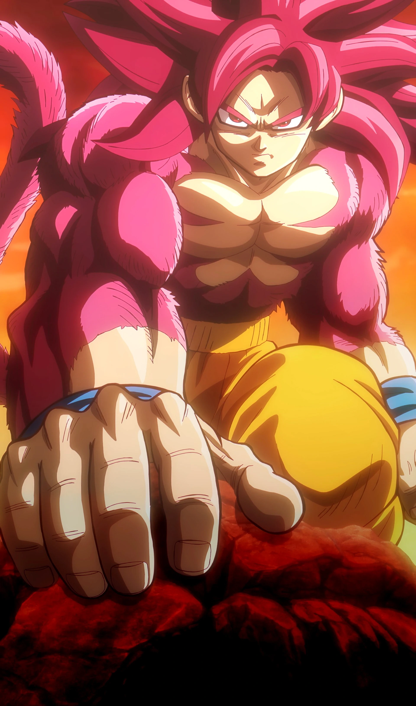
GT限定的最強型態，融合超大猿型的強大與賽亞人形態。黑色頭髮、紅色眼影、身體覆蓋紅色毛髮，氣場深紅。雖然GT為非正史，超賽4的外觀設計仍是粉絲最喜愛的型態之一。